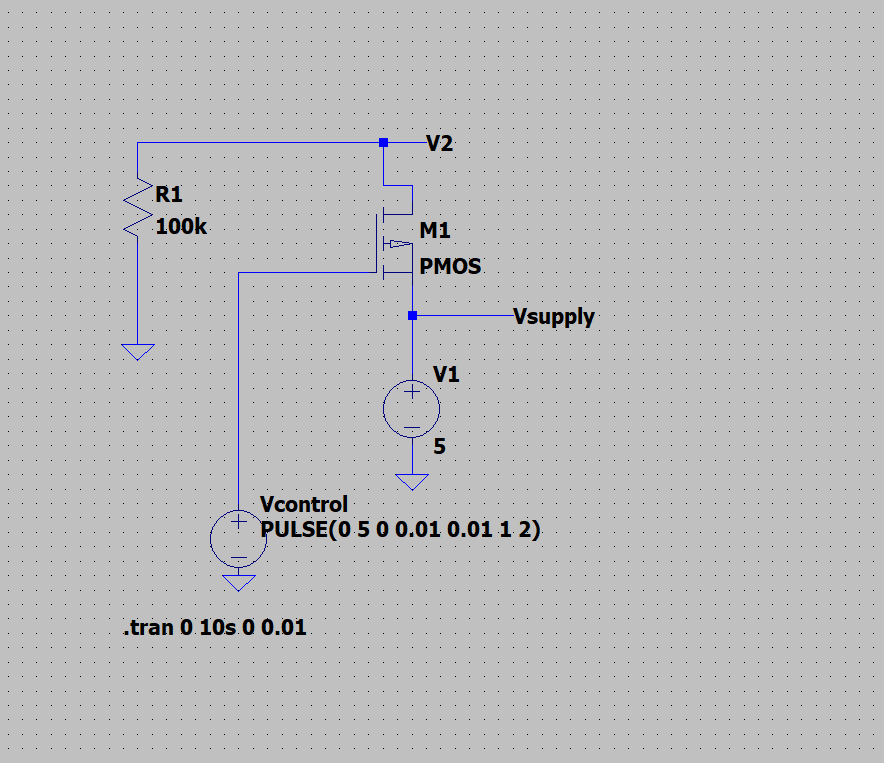
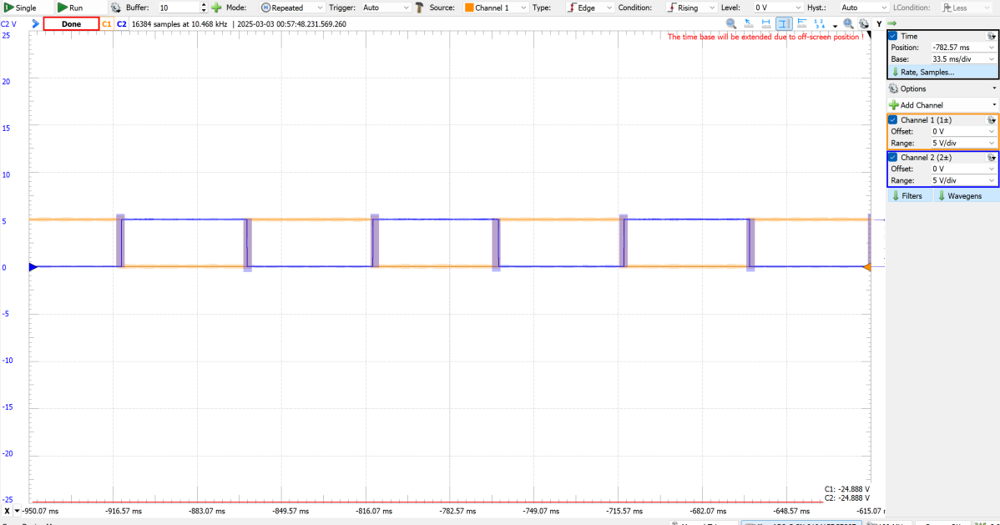
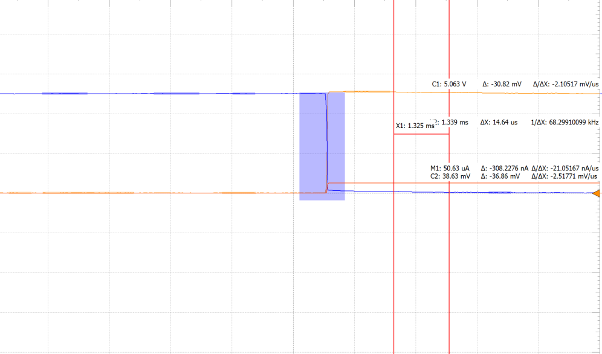

Project
Voltage-Controlled Switch
Two MOSFET-based switch circuits, characterized for ON/OFF resistance, leakage current, and bidirectionality.
What I did
- Designed PMOS and NMOS switch circuits.
- Simulated switching behavior across control voltages.
- Measured ON/OFF resistance and leakage current on the bench.
Result
Measured results matched theory with small deviations, a hands-on study of real-device trade-offs.


